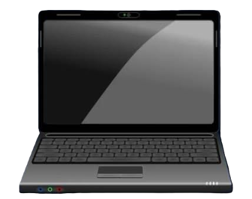

Sobre nós
Mark Tech Soluções Eletrônicas
Mark Tech Soluções Eletrônicas nasceu da paixão pela eletrônica e pela tecnologia. Com início aos 10 anos de idade, nosso técnico desenvolveu conhecimento prático ao longo de mais de duas décadas de atuação no mercado, acompanhando a evolução dos equipamentos e das soluções tecnológicas. Hoje, com mais de 20 anos de experiência, oferecemos serviços baseados em conhecimento técnico, ética, transparência e compromisso com o cliente, sempre buscando a melhor solução pelo melhor custo-benefício.